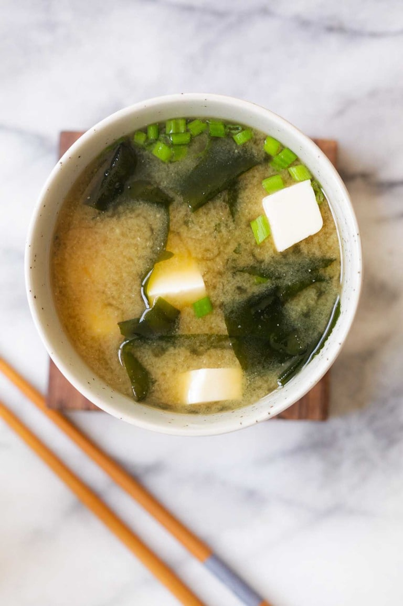

Miso Soup

Authentic Miso Soup Recipe
Authentic Asian miso soup recipe. It's very simple to make, as well as healthy and delicious! ^u^
Ingredients
- 4 cups water
- 1 6in piece of Japanese kombu or dried kelp (rinsed)
- 1 oz. (30g) dried bonito flakes
- 1 oz. dried seaweed, soaked in warm water and drained
- 4 oz. (115g) silken tofu, cut into small pieces
- 1 tbsp chopped scallion
Steps
- Bring the water and kombu to boil in a stock pot on medium heat. Remove the kombu and add the bonito flakes, simmer on low heat for 5 minutes. Remove the foams and scums on the surface using a ladle.
- Strain the dashi through a fine sieve. Do not squeeze or press the bonito flakes. Discard the bonito flakes. Bring the dashi to boil, then add the seaweed and tofu and cook for 3 minutes. Turn off the heat and add the miso paste into the soup. Stir the soup with a pair of chopsticks until the miso paste is completely dissolved. Top with the scallion and serve immediately.